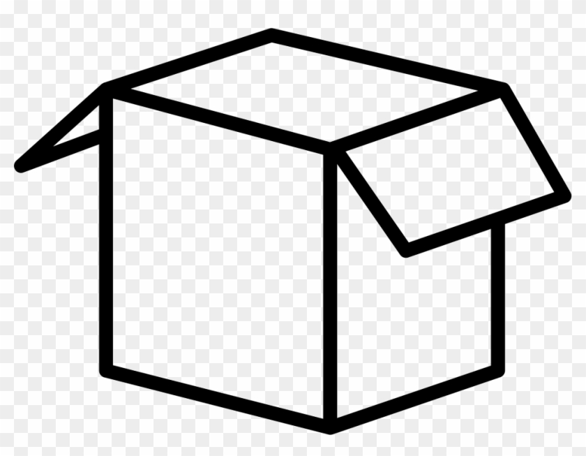

  <!-- Render loading if authStatus is still configuring  -->
<ng-container *ngIf="authenticator.authStatus === 'configuring'">
  Loading...
</ng-container>


  <amplify-authenticator>
    <ng-template
      amplifySlot="authenticated"
      let-user="user"
      let-signOut="signOut"
    >


      <!-- Toolbar -->
<!-- <div class="toolbar" role="banner">
  
  <span>Welcome {{ user.username }}</span>
    <div class="spacer"></div>
    <a><button (click)="signOut()">Sign Out</button></a>
</div> -->

<nav class="navbar navbar-expand-lg bg-light rounded" aria-label="Eleventh navbar example">
  <div class="container-fluid">
    
    <button class="navbar-toggler" type="button" data-bs-toggle="collapse" data-bs-target="#navbarsExample09" aria-controls="navbarsExample09" aria-expanded="false" aria-label="Toggle navigation">
      <span class="navbar-toggler-icon"></span>
    </button>

    <div class="collapse navbar-collapse" id="navbarsExample09">
      <ul class="navbar-nav me-auto mb-2 mb-lg-0">
        <li class="nav-item">
          <a class="nav-link active" aria-current="page" href="#">Home</a>
        </li>
      </ul>
  
      <a (click)="signOut()"
     role="button"
     class="btn btn-outline-primary btn-block text-center">
    Sign Out
  </a>
    </div>
  </div>
</nav>

<div class="content" role="main">
  
  <router-outlet></router-outlet>
  </div>

    </ng-template>
  </amplify-authenticator>


